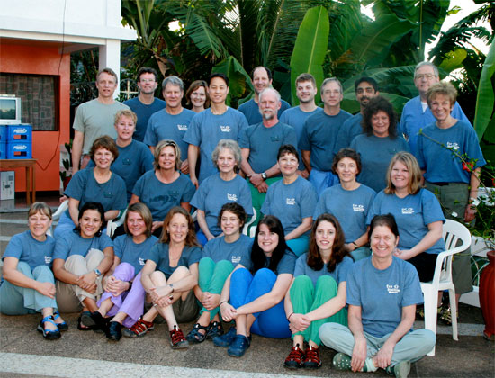

Creating Unity Among Communities
At its origin, our mission is both medical and ethical. We strive to create unity among communities through charity and healing.
By providing adult and pediatric eye care to people of impoverished regions around the world we are restoring their health and empowering them to be self-sustaining.
Through delivering medical treatment our teams gain unique insight into the people and communities we serve.
This "reverse mission" aspect of our work importantly and positively influences our team members on return to their home communities.
We strive to empathize with people through understanding their life challenges. This empathy heightens our awareness and compassion at home and improves health and empowerment in all the communities we serve.